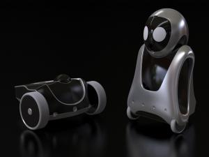

{kind=link}
Citation : Le Site du Zéro
Bonjour David, quel est ton poste et quelles sont tes responsabilités ?
David Lemaitre - Je suis directeur de ma propre entreprise, EOS Innovation, une société de robotique qui conçoit et développe des robots mobiles dans le domaine de la sécurité professionnelle. Mon rôle est d'encadrer l'équipe et de définir les axes stratégiques. Ceci dit, le plus gros du travail consiste à chercher des clients et de l'argent afin de faire vivre la société !
e-vigilante et e-one, les deux robots conçus par EOS Innovation
{kind=link}
Citation : Le Site du Zéro
En tant que Directeur général, comment se déroulent tes journées de travail ?
David Lemaitre - Étant à la tête de la société, je dois gérer beaucoup d’aspects différents de l’organisation de la boîte. Ma première tâche est donc de faire un point sur les priorités de la journée. Généralement, je boucle tout ce qui est administratif dans la matinée : réponses aux e-mails, dossiers à mettre à jour, demandes de devis, etc.
La partie de la journée que je préfère, c’est quand je suis avec mon équipe, soit pour un brainstorming, soit pour effectuer des tests. Cela me permet de revenir à ce qui est vraiment ma passion ; la robotique et la technique. Je peux ainsi suivre l’avancement du projet, discuter des difficultés avec mes techniciens, parfois même aider à faire avancer le schmilblick... Eh oui, je suis quand même ingénieur avant tout !
Citation : Le Site du Zéro
Comment t'est venue l'idée de fonder EOS innovation ?
David Lemaitre - J'ai longtemps occupé un poste de responsable de production dans une autre société, et je songeais depuis plusieurs années à le quitter. Je voulais en effet revenir dans le domaine de la robotique, qui est ma passion depuis que je suis tout petit. Suite à la crise économique de 2008, il y a eu beaucoup de licenciements dans mon ancienne boîte et j'en faisais partie.
J'ai pris ça comme une opportunité pour monter ma propre société et me consacrer à la robotique. Nous avons commencé par développer e-one, un robot majordome pour l'aide à la maison et l'aide aux personnes âgées. Malheureusement, le marché pour ce genre de produit était trop incertain ! Nous nous sommes donc réorientés dans la sécurité professionnelle, avec e-vigilante où nous avons trouvé une véritable opportunité de marché pour aider les agents de sécurité à sécuriser les entrepôts et les sites industriels.
http://www.youtube.com/v/LB6JOIPOe5g
Démonstration du robot e-one au salon Innorobo de Lyon
Citation : Le Site du Zéro
Tout le monde rêve d’avoir sa propre entreprise. Quels sont les avantages et les inconvénients ?
David Lemaitre - Être son propre patron, ça peut sembler génial, mais il faut avoir à l'esprit que c'est beaucoup de temps à consacrer à son projet (donc moins de temps avec sa famille) et beaucoup d'argent à investir aussi. Si la boîte ne marche pas, on risque de perdre tout ce que l'on a créé ! Et qui plus est, on se retrouve souvent sans chômage et avec des prêts à rembourser... pas facile comme situation ! Avant de se lancer dans une telle aventure, il faut quand même savoir ce qu’on fait, et garder à l’esprit que seulement 53 % des nouvelles entreprises passent le cap des 5 ans (source INSEE).
Malgré les difficultés, cela reste une superbe aventure très formatrice et où l'on rencontre beaucoup de gens passionnants. Je m’estime vraiment chanceux de pouvoir vivre de ma passion ; ce n’est pas donné à tout le monde !
e-one, le robot majordome, première réalisation d'EOS Innovation
{kind=link}
Citation : Le Site du Zéro
Quel a été ton parcours avant de créer EOS innovation ?
David Lemaitre - J'ai fait une maîtrise d'électronique, puis un DEA en robotique mobile.
J'ai ensuite travaillé comme responsable de production pendant presque 10 ans. Mon travail était le suivant : on me donnait un produit qui sortait d'un bureau d'étude, je trouvais l'usine qui pouvait le fabriquer et j'organisais et suivais la production et les livraisons aux clients. J'avais aussi en charge des cellules de service après vente et des prix de revient des produits.
Citation : Le Site du Zéro
Quelles recommandations donnerais-tu aux lycéens et aux étudiants qui souhaitent accéder à un poste de direction, particulièrement dans la robotique ?
David Lemaitre - La direction d'une société n'est pas aisée. En effet, il ne suffit pas d'avoir une idée ou d'être un bon ingénieur, il faut avoir des connaissances en finance, en comptabilité, en juridique, en management, avoir un bon relationnel et surtout être crédible !
Et commencer trop jeune n'aide pas forcement, il faut montrer son expérience professionnelle pour être crédible. C'est pour cela qu'à mon avis il ne faut pas se précipiter et bien réfléchir à un parcours scolaire et professionnel adapté avant de se lancer dans l'aventure de la création ou de la direction d'une entreprise.
Autre point important : pour monter une société, surtout pour une société qui fabrique des produits, il faut beaucoup d'argent pour démarrer.
Récompenses gagnées par EOS Innovation
{kind=link}
{kind=link}
{kind=link}
Citation : Le Site du Zéro
Enfin, quels conseils donnerais-tu aux personnes en recherche d’un emploi ?
David Lemaitre - De s'accrocher surtout si la robotique les passionne car le milieu est en plein émergence et les postes en robotique devraient exploser dans les prochaines années.
De plus en plus de sociétés se créent dans le domaine de la robotique de service, c'est un métier d'avenir à fort potentiel. Nous n'en sommes qu'au début, comme l'informatique il y a quelques années... et c'est une superbe aventure !